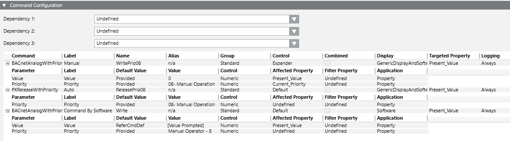
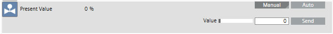

Setting Up Commands in Object Models
In the Models & Functions tab, you can configure commands for the properties of object models. The following procedures provide some examples. For reference information, see Command Configuration Expander.

For a list of available commands, see the Command List section.
Set Up a Boolean Command (Out of Service)
- You want to configure a command on an Out of Service property.
- In System Browser, select Project > System Settings > Libraries > [... ] > [object model].
- Select the Models & Functions tab.
- In the Properties expander, select the Out of Service property.
- Open the Command Configuration expander.
- Under Dependency 1, select the option Out_of_Service.
- Click New.
- A new line is added to the table.
- Click in the Command column, and from the drop-down list select status BACnetWriteToggleOn.
- In the Label column, enter a label for the button, for example, Out of Svc.
- In the Out_of_Service column, first select the operand equal sign (=) and then select the option In Service.
- Select Alias.
- Repeat steps 4 to 7 as per the table below.
- The Out of Service property is configured.
- The buttons for operation are defined.
Command | Label | Acked_Transitions | Alias | |
BACnetWriteToggleOn | Out of Service | = | In Service | n/a |
BACnetWriteToggleOff | In Service | = | Out of Service | n/a |
Additional dependencies can be defined as needed. In this case, select Dependency 2 and 3 and configure the appropriate response.
Analog Output (Present Value)
- In System Browser, select Project > System Settings > Libraries > [... ] > [analog output object model].
- Select the Models & Functions tab.
- In the Properties expander, select the Present Value property.
- Open the Command Configuration expander.
- Under Dependency 1, select Undefined.
- Click New.
- A new line is added to the table.
- In the Command column, select status BACnetAnalogWithPriority.
- In the Label column, enter a label, for example, Command for the buttons.
- In the Current_priority column, first select the operand and then select the desired options as needed.
- Select Alias.
- Define the user group (Standard, Event, Advanced, Ownership) used to execute the function.
- Repeat steps 3 and 4 as per the table below.
- The Present Value property is configured.
- The buttons for operation are defined.
Command | Label | Acked_ Transitions | Alias | Group | Expander | Combi-ned | |
BACnetAnalogWithPriority | Command | * | n/a | n/a | Standard | Expander | |
BACnetReleaseWithPriority | Release | * | n/a | n/a | Standard | Expander | |
Detailed Information on BACnetAnalogWithPriority | |||||
Parameter | Label | Default Value | Value | Control | Affected property |
Value | Value | Runtime | [x] | Numeric | Present_Value |
Priority | Priority | Provided | MO =8 | DropDown | Undefined |

